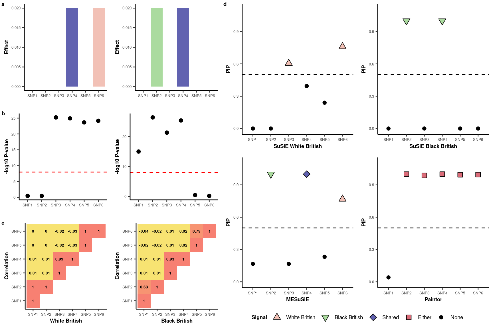

Last updated: 2023-10-09
Checks: 7 0
Knit directory: meSuSie_Analysis/
This reproducible R Markdown analysis was created with workflowr (version 1.7.0). The Checks tab describes the reproducibility checks that were applied when the results were created. The Past versions tab lists the development history.
Great! Since the R Markdown file has been committed to the Git repository, you know the exact version of the code that produced these results.
Great job! The global environment was empty. Objects defined in the global environment can affect the analysis in your R Markdown file in unknown ways. For reproduciblity it’s best to always run the code in an empty environment.
The command set.seed(20220530) was run prior to running
the code in the R Markdown file. Setting a seed ensures that any results
that rely on randomness, e.g. subsampling or permutations, are
reproducible.
Great job! Recording the operating system, R version, and package versions is critical for reproducibility.
Nice! There were no cached chunks for this analysis, so you can be confident that you successfully produced the results during this run.
Great job! Using relative paths to the files within your workflowr project makes it easier to run your code on other machines.
Great! You are using Git for version control. Tracking code development and connecting the code version to the results is critical for reproducibility.
The results in this page were generated with repository version ba8db56. See the Past versions tab to see a history of the changes made to the R Markdown and HTML files.
Note that you need to be careful to ensure that all relevant files for
the analysis have been committed to Git prior to generating the results
(you can use wflow_publish or
wflow_git_commit). workflowr only checks the R Markdown
file, but you know if there are other scripts or data files that it
depends on. Below is the status of the Git repository when the results
were generated:
Untracked files:
Untracked: data/GLGC_chr_22.txt
Untracked: data/MESuSiE_Example.RData
Untracked: data/UKBB_chr_22.txt
Unstaged changes:
Deleted: analysis/illustration.Rmd
Deleted: analysis/toy_example.Rmd
Note that any generated files, e.g. HTML, png, CSS, etc., are not included in this status report because it is ok for generated content to have uncommitted changes.
These are the previous versions of the repository in which changes were
made to the R Markdown (analysis/installation.Rmd) and HTML
(docs/installation.html) files. If you’ve configured a
remote Git repository (see ?wflow_git_remote), click on the
hyperlinks in the table below to view the files as they were in that
past version.
| File | Version | Author | Date | Message |
|---|---|---|---|---|
| Rmd | ba8db56 | borangao | 2023-10-09 | Update my analysis |
| html | 504f3a9 | borangao | 2023-10-09 | Build site. |
| Rmd | 62ce4b3 | borangao | 2023-10-09 | Update my analysis |
| html | 10cb267 | borangao | 2022-11-09 | Build site. |
| Rmd | 65fba54 | borangao | 2022-11-09 | Build site. |
| html | 65fba54 | borangao | 2022-11-09 | Build site. |
library(devtools)
# Install MESuSiE
install_github("borangao/MESuSiE",dependencies = FALSE)
# Load MESuSiE
library(MESuSiE)The motivating example is based on a toy dataset outlined in the manuscript.
The dataset contains:
The primary advantage of MESuSiE lies in its capacity to differentiate between shared and ancestry-specific causal signals. For demonstration purposes, we simulated a dataset containing one shared and two ancestry-specific causal signals.
The package comes with the necessary data included. To use MESuSiE, two lists are required: one for summary statistics and another for LD matrices, each from multiple ancestries. It’s essential to name each element in these lists, ensuring that the naming is consistent between the summary statistics and LD matrices.
data(summ_stat_list)
data(LD_list)
summ_stat_list$WB
SNP Beta Se Z N POS
rs1890449 SNP1 -0.001806456 0.001825742 -0.9894367 3e+05 1
rs3122053 SNP2 -0.001749892 0.001825742 -0.9584555 3e+05 2
rs6600259 SNP3 0.019230827 0.001825742 10.5331576 3e+05 3
rs6681089 SNP4 0.019113531 0.001825742 10.4689120 3e+05 4
rs3008244 SNP5 0.018599221 0.001825742 10.1872128 3e+05 5
rs3008245 SNP6 0.018806821 0.001825742 10.3009200 3e+05 6
$BB
SNP Beta Se Z N POS
rs1890449 SNP1 0.0146503149 0.001825742 8.0243079 3e+05 1
rs3122053 SNP2 0.0196888866 0.001825742 10.7840473 3e+05 2
rs6600259 SNP3 0.0176200508 0.001825742 9.6508993 3e+05 3
rs6681089 SNP4 0.0192921442 0.001825742 10.5667426 3e+05 4
rs3008244 SNP5 -0.0017014483 0.001825742 -0.9319216 3e+05 5
rs3008245 SNP6 0.0007568107 0.001825742 0.4145223 3e+05 6Each element in the summary statistics list represents a data frame of GWAS summary statistics for each ancestry. This data frame should have columns named SNP, Beta, Se, Z, and N, which correspond to the SNP information, marginal effect size, standard error, Z-scores, and sample size, respectively.
LD_list$WB
SNP1 SNP2 SNP3 SNP4 SNP5
rs1890449 1.0000000000 0.9985345076 0.008849574 0.008352736 0.0004252546
rs3122053 0.9985345076 1.0000000000 0.009187116 0.008718572 0.0006605135
rs6600259 0.0088495745 0.0091871156 1.000000000 0.992043794 -0.0238684132
rs6681089 0.0083527360 0.0087185716 0.992043794 1.000000000 -0.0263527244
rs3008244 0.0004252546 0.0006605135 -0.023868413 -0.026352724 1.0000000000
rs3008245 0.0005909073 0.0008813672 -0.023679608 -0.025942562 0.9961393233
SNP6
rs1890449 0.0005909073
rs3122053 0.0008813672
rs6600259 -0.0236796083
rs6681089 -0.0259425621
rs3008244 0.9961393233
rs3008245 1.0000000000
$BB
SNP1 SNP2 SNP3 SNP4 SNP5
rs1890449 1.000000000 0.627749083 0.006781938 0.01153312 -0.02141473
rs3122053 0.627749083 1.000000000 0.008521627 0.01231062 -0.01548369
rs6600259 0.006781938 0.008521627 1.000000000 0.92899225 0.01440080
rs6681089 0.011533117 0.012310618 0.928992254 1.00000000 0.01766183
rs3008244 -0.021414730 -0.015483693 0.014400801 0.01766183 1.00000000
rs3008245 -0.035179346 -0.019228441 0.012404065 0.01611964 0.79215823
SNP6
rs1890449 -0.03517935
rs3122053 -0.01922844
rs6600259 0.01240406
rs6681089 0.01611964
rs3008244 0.79215823
rs3008245 1.00000000Each element in the LD matrices list corresponds to an LD matrix for a specific ancestry. The column names of this matrix should match the SNP names found in the summary statistics, ensuring consistency across data.
Note: For a detailed tutorial, please refer to Data Preparation and analysis.
MESuSiE_res<-meSuSie_core(LD_list,summ_stat_list,L=10)*************************************************************
Multiple Ancestry Sum of Single Effect Model (MESuSiE)
Visit http://www.xzlab.org/software.html For Update
(C) 2022 Boran Gao, Xiang Zhou
GNU General Public License
*************************************************************
# Start data processing for sufficient statistics
# Create MESuSiE object
# Start data analysis
# Data analysis is done, and now generates result
Potential causal SNPs with PIP > 0.5: SNP2 SNP4 SNP6
Credible sets for effects:
$cs
$cs$L1
[1] 4
$cs$L2
[1] 2
$cs$L3
[1] 5 6
$cs_category
L1 L2 L3
"WB_BB" "BB" "WB"
$purity
min.abs.corr mean.abs.corr median.abs.corr
L1 1.0000000 1.0000000 1.0000000
L2 1.0000000 1.0000000 1.0000000
L3 0.9961393 0.9980697 0.9980697
$cs_index
[1] 1 2 3
$coverage
[1] 0.9997947 1.0000000 1.0000000
$requested_coverage
[1] 0.95
Use MESuSiE_Plot() for visualization
# Total time used for the analysis: 0 minsMESuSiE_res$pip_config WB BB WB_BB
[1,] 0.07142857 0.07142857 0.02380952
[2,] 0.07142857 0.63214915 0.36785085
[3,] 0.07142857 0.07142857 0.02380952
[4,] 0.07142857 0.07142857 0.99979466
[5,] 0.18126816 0.07142857 0.05082666
[6,] 0.56691986 0.07142857 0.20098531We observed that three SNPs have a posterior inclusion probability (PIP) exceeding the 0.5 threshold. Upon further examination of the PIP for ancestry-specificity and shared traits, we identified that SNP4 is shared, while SNP2 and SNP6 are ancestry-specific. The categories within the credible set indicate the ancestries affected by the SNPs present in the set.
library(susieR)
susie_WB<-susie_rss(summ_stat_list$WB$Z,LD_list$WB)
susie_BB<-susie_rss(summ_stat_list$BB$Z,LD_list$BB)
susie_WB$pip SNP1 SNP2 SNP3 SNP4 SNP5 SNP6
0.0000000 0.0000000 0.6052634 0.3947366 0.2398731 0.7601269 susie_BB$pip SNP1 SNP2 SNP3 SNP4 SNP5 SNP6
1.015177e-11 1.000000e+00 1.704749e-04 9.998295e-01 0.000000e+00 0.000000e+00 For the univariate SuSiE analysis, we found that SNP 3 and 6 are signals distinct to Europeans. In contrast, SNP 2 and 4 are signals unique to Africans, based on a PIP threshold of 0.5.
##We load the Paintor result directly
paintor_res<-read.table("/net/fantasia/home/borang/Susie_Mult/Revision_Round_1/Simulation/091223/data/toy_example/result/fig1.mcmc.paintor",header=T)
paintor_res$Posterior_Prob[1] 0.040756 0.999980 0.987828 0.999956 0.993764 0.995080Paintor identifies SNP2-6 as signals without distinguishing ancestry-specific or shared causal variant.

| Version | Author | Date |
|---|---|---|
| 504f3a9 | borangao | 2023-10-09 |
sessionInfo()R version 4.3.1 (2023-06-16)
Platform: x86_64-pc-linux-gnu (64-bit)
Running under: Ubuntu 20.04.6 LTS
Matrix products: default
BLAS: /usr/lib/x86_64-linux-gnu/openblas-pthread/libblas.so.3
LAPACK: /usr/lib/x86_64-linux-gnu/openblas-pthread/liblapack.so.3; LAPACK version 3.9.0
locale:
[1] LC_CTYPE=en_US.UTF-8 LC_NUMERIC=C
[3] LC_TIME=en_US.UTF-8 LC_COLLATE=en_US.UTF-8
[5] LC_MONETARY=en_US.UTF-8 LC_MESSAGES=en_US.UTF-8
[7] LC_PAPER=en_US.UTF-8 LC_NAME=C
[9] LC_ADDRESS=C LC_TELEPHONE=C
[11] LC_MEASUREMENT=en_US.UTF-8 LC_IDENTIFICATION=C
time zone: America/New_York
tzcode source: system (glibc)
attached base packages:
[1] stats graphics grDevices utils datasets methods base
other attached packages:
[1] ggpubr_0.6.0 cowplot_1.1.1 dplyr_1.1.2 ggplot2_3.4.2
[5] susieR_0.11.84 MESuSiE_1.0 devtools_2.4.3 usethis_2.2.1
[9] workflowr_1.7.0
loaded via a namespace (and not attached):
[1] tidyselect_1.2.0 farver_2.1.1 fastmap_1.1.1
[4] reshape_0.8.9 promises_1.2.0.1 digest_0.6.30
[7] lifecycle_1.0.3 ellipsis_0.3.2 processx_3.8.0
[10] magrittr_2.0.3 compiler_4.3.1 rlang_1.1.1
[13] sass_0.4.6 progress_1.2.2 tools_4.3.1
[16] utf8_1.2.3 yaml_2.3.7 knitr_1.39
[19] ggsignif_0.6.4 labeling_0.4.2 prettyunits_1.2.0
[22] pkgbuild_1.4.2 curl_5.0.1 plyr_1.8.8
[25] abind_1.4-5 pkgload_1.3.1 withr_2.5.1
[28] purrr_1.0.1 grid_4.3.1 fansi_1.0.5
[31] git2r_0.32.0 colorspace_2.1-0 scales_1.2.1
[34] cli_3.6.1 rmarkdown_2.22 crayon_1.5.2
[37] generics_0.1.3 remotes_2.4.2 rstudioapi_0.14
[40] httr_1.4.6 RcppArmadillo_0.11.1.1.0 sessioninfo_1.2.2
[43] cachem_1.0.8 stringr_1.5.0 parallel_4.3.1
[46] matrixStats_1.0.0 vctrs_0.6.2 Matrix_1.5-4.1
[49] jsonlite_1.8.3 carData_3.0-5 car_3.1-2
[52] callr_3.7.3 hms_1.1.2 mixsqp_0.3-48
[55] ggrepel_0.9.1 rstatix_0.7.2 irlba_2.3.5.1
[58] jquerylib_0.1.4 tidyr_1.3.0 glue_1.6.2
[61] nloptr_2.0.3 ps_1.7.2 stringi_1.7.12
[64] gtable_0.3.1 later_1.3.1 RcppZiggurat_0.1.6
[67] munsell_0.5.0 tibble_3.2.1 pillar_1.9.0
[70] htmltools_0.5.5 R6_2.5.1 rprojroot_2.0.3
[73] evaluate_0.18 lattice_0.20-45 highr_0.10
[76] backports_1.4.1 Rfast_2.0.6 memoise_2.0.1
[79] broom_1.0.5 httpuv_1.6.11 bslib_0.5.0
[82] Rcpp_1.0.11 gridExtra_2.3 whisker_0.4.1
[85] xfun_0.39 fs_1.6.2 getPass_0.2-2
[88] pkgconfig_2.0.3